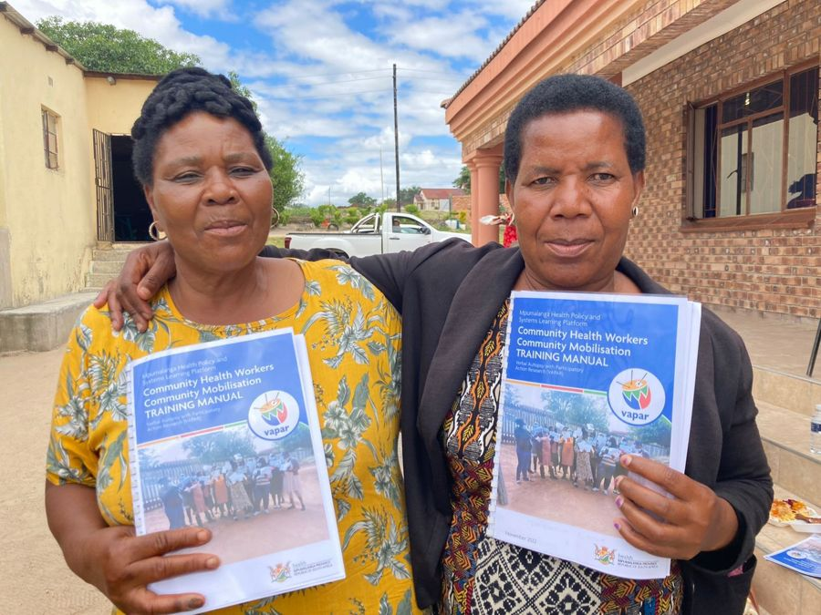

News · November 2022
Launching a new resource for Community Health Workers

Community Health Workers have an essential role in primary healthcare, linking communities and health systems. In practice, however, CHWs experience many challenges. VAPAR researchers and the Mpumalanga Department of Health this week launched a new resource for CHWs: a manual containing tools to convene community groups, raise priority health concerns, understand concerns from different perspectives and facilitate action.
“The training taught me ways of identifying challenges and addressing them; I understand challenges better than I used to. I’m confident that now I know even how to identify people who can assist us in dealing with various issues.”CHW · Bushbuckridge sub-district